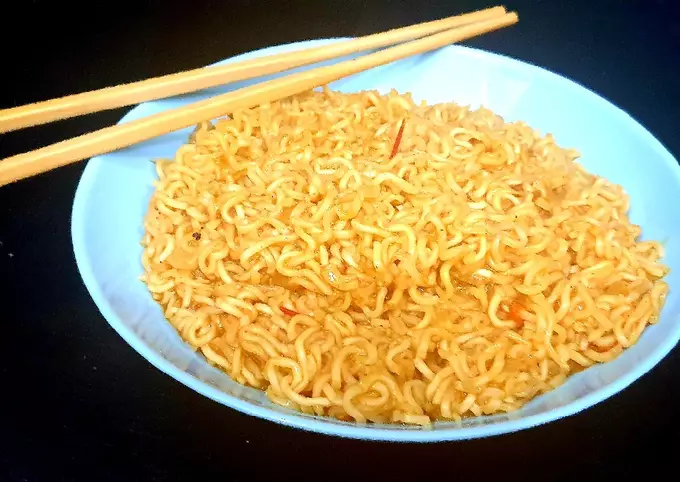

Maggi recipe

Description
Maggie is commonly available food item in india famous for its
familiar taste and being able to cook it in 3 min. The smallest
packet of maggie available is Rs 5. They also sell the masala(or spices)
packet seperately which is also quite famous
Ingredients
- Rs 10 maggi packet
- 2 cups water
Steps
- Take a cooking bowl fill it with the 2 cups of water
- Heat the bowl until the water in it boils
- Add maggi noodles to the boiling water
- Add maggi masala into the bowl
- Wait for 1-2 minutes based on how you want the maggi
- Complete!